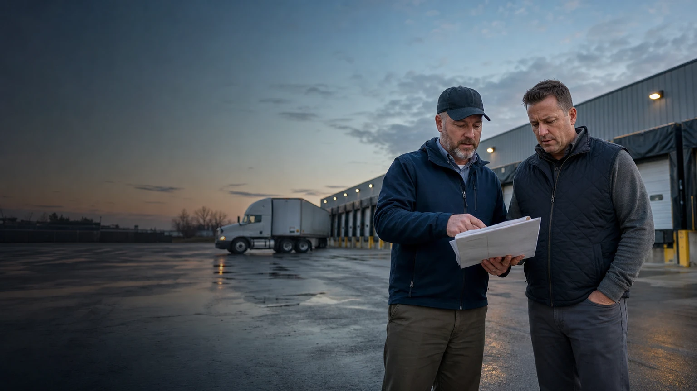

Software-assisted service
BOF uses structured records and simulated product surfaces to organize review, ownership, evidence, and next action. It is not presented as unattended automation.

Company
BackOfficeFleet helps trucking teams make readiness, document, exception, and follow-up decisions visible. The work combines structured software surfaces with practical operating support around the records a fleet already has to control.
Book a working session →BOF uses structured records and simulated product surfaces to organize review, ownership, evidence, and next action. It is not presented as unattended automation.
The public offer leads with for-hire trucking fleets while supporting private fleets, public fleets, contractors, and qualified partners through distinct routes.
A BOF record should show what is ready, what needs review, what is held, who owns the next action, and why the decision matters.
How BOF works
BOF is easiest to evaluate around a real record: a driver file, release question, document packet, settlement exception, carrier review, or owner follow-up queue.
Define the decision the team needs to make and the consequence of leaving it unclear.
Connect the documents, dates, people, equipment, and prior actions that support the decision.
Show whether the record is ready, watch, or hold and identify the accountable next action.
Keep the decision and evidence available for dispatch, billing, settlement, reporting, or later review.
Qualification
BOF supports administrative coordination and operating-record discipline. The exact engagement is qualified in a working session.
A practical first step
A working session starts with one operating issue, the evidence already available, and the person who understands what must happen next.